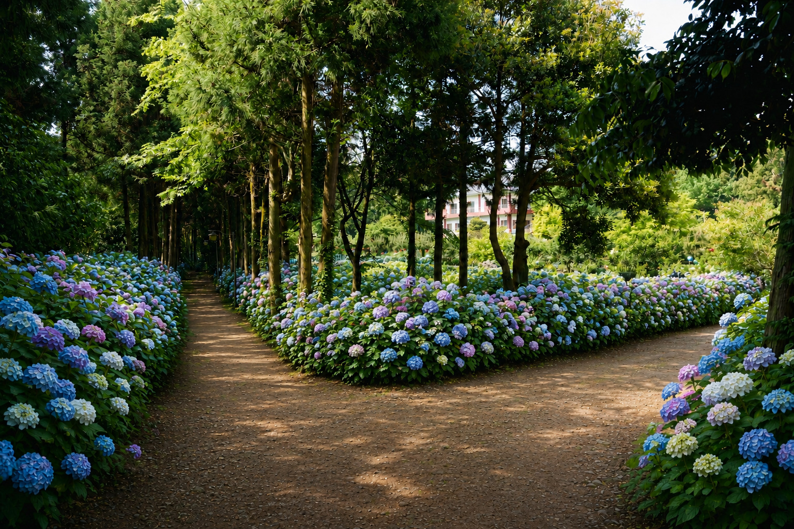
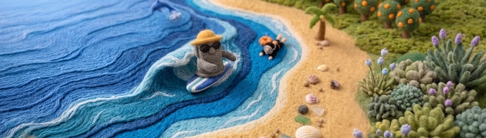
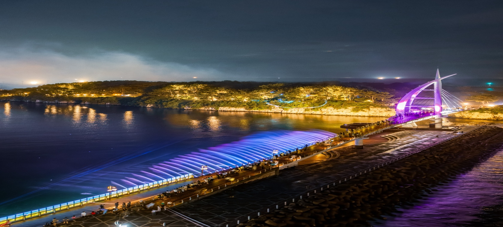
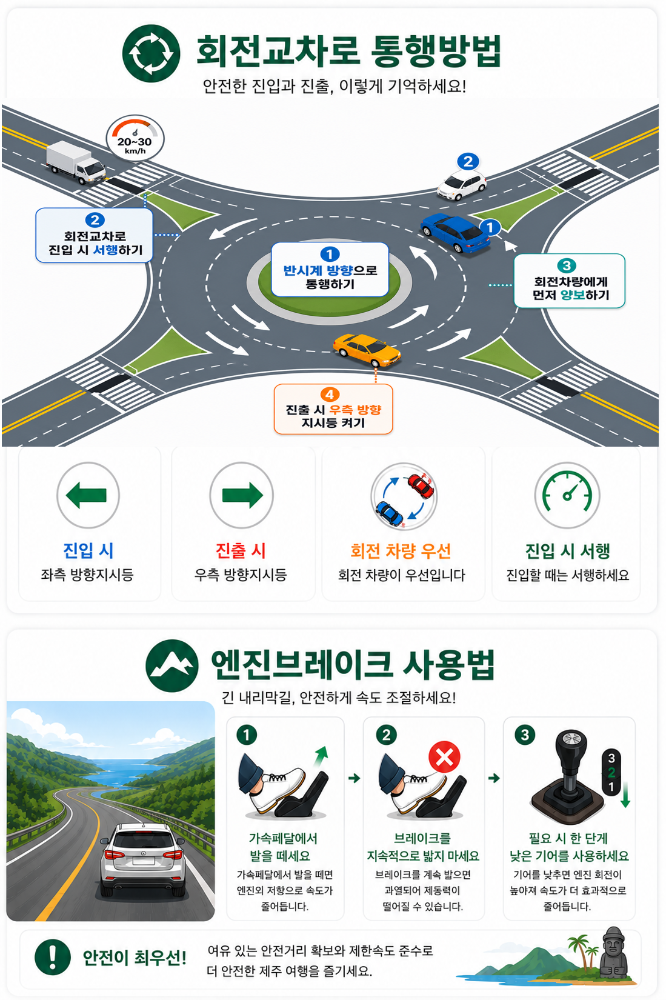

제주관광공사
표시된 경로 중 운전 난이도가 높은 산간도로를 지나는 코스가 있습니다. 사고이력은 상대적으로 적더라도 실제 주행 시 각별한 주의가 필요합니다.
 사고이력
사고이력 주요도로
주요도로

✔ 제주시 도심·공항·연동·노형동 일대 사고 밀집
✔ 해안도로 관광지 주변 사고 다발
✔ 교차로 및 관광지 진출입 구간 사고 비율 높음
✔ 야간·주말 운전 시 주의 필요
✔ 차대차 사고 비중이 가장 높음
✔ 안전운전의무위반·기타 법규위반 사고 다수
✔ 공항·제주시 도심·관광지 진출입 구간 사고 집중



 렌터카 안전운전 영상
렌터카 안전운전 영상

Google Sheets 통계 연결 후 자동 표시됩니다.
Google Sheets 통계 연결 후 자동 표시됩니다.